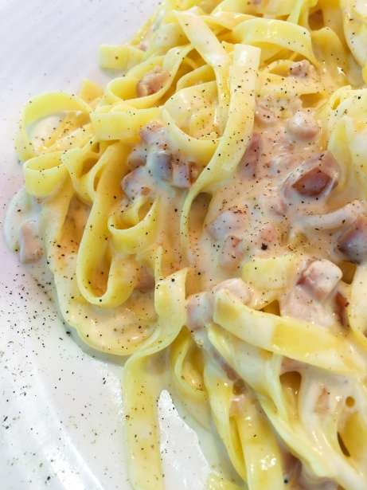

Spaghetti Carbonara
Home

This classic Italian pasta dish features a rich and creamy sauce made with
eggs, cheese, pancetta, and black pepper. Despite its creamy appearance,
traditional carbonara contains no cream—the silky sauce comes from the
combination of eggs and starchy pasta water. It's a simple yet decadent
dish that's perfect for a special dinner.
Ingredients
-
Pasta: This recipe uses 1 pound of spaghetti, but you
can use any long pasta like fettuccine or linguine.
-
Pancetta: 8 ounces of pancetta or bacon, diced into
small cubes for that signature salty, crispy texture.
-
Eggs: You'll need 4 large eggs at room temperature. The
eggs will create the creamy sauce when combined with the hot pasta.
-
Cheese: A combination of freshly grated Parmesan and
Pecorino Romano cheese (about 1 cup total) provides the perfect savory
flavor.
-
Black Pepper: Freshly ground black pepper is essential
and should be used generously for that signature carbonara taste.
-
Garlic: 2 cloves of garlic, minced, add depth to the
pancetta flavor.
-
Salt: Salt the pasta water generously, as this is your
main source of seasoning for the pasta itself.
Steps
-
Prepare the ingredients: Grate the cheeses and set
aside. Beat the eggs in a bowl and mix in half of the grated cheese and
a generous amount of black pepper. Dice the pancetta into small cubes.
-
Cook the pancetta: Heat a large pan over medium heat
and cook the pancetta until it's crispy and golden, about 5-7 minutes.
Add the minced garlic in the last minute. Remove from heat and set aside
with the rendered fat.
-
Cook the pasta: Bring a large pot of heavily salted
water to a boil. Add the spaghetti and cook until al dente according to
package directions. Reserve about 1 cup of pasta water before draining.
-
Combine pasta and pancetta: Add the drained pasta to
the pan with the pancetta and toss to coat. Remove the pan from heat and
let it cool slightly (about 1 minute) to prevent the eggs from
scrambling.
-
Create the sauce: Pour the egg and cheese mixture into
the pasta, quickly tossing everything together. Add pasta water a
tablespoon at a time until you reach a creamy, silky consistency. The
residual heat from the pasta will cook the eggs gently, creating the
sauce.
-
Serve immediately: Plate the carbonara and top with the
remaining grated cheese and extra black pepper. Serve immediately while
hot.